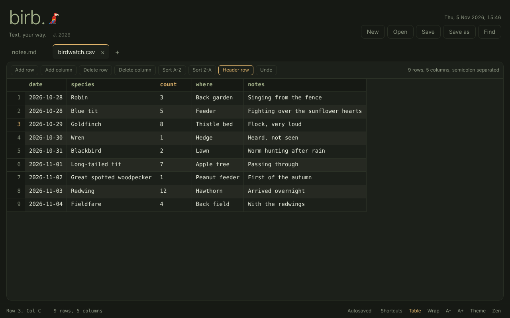

I built Birb because I was fed up opening CSVs in a text editor and breaking the formatting. It turned into a proper little editor for Windows, macOS and Linux, with handy bits for daily use — tabs, find and replace, and a table view for CSV files that saves them back exactly as it found them. Free, offline, and there is a small parrot.
Runs in your browser. No install needed.

This is the bit that started it all. Open a .csv or .tsv and it turns into a proper grid — no more squinting at commas. Commas, semicolons, tabs and pipes are all detected for you, and when you save, everything goes back exactly as it was. Sort columns, add or remove rows and columns, toggle the header, undo — the usual stuff, done simply.
Everything is saved as you type. Close Birb, come back tomorrow, and all your tabs are right where you left them. There are dark and light themes, line numbers, word wrap and a zen mode for when you want to focus.
# open files; new names are created on first save birb notes.txt data.csv # or pipe something in git log --oneline | birb -
Piping uses a small npm launcher. The README explains how to get it.
The quickest way is to just open Birb in your browser — it works straight away, nothing to install. If you'd like it on your desktop, click the install icon in Chrome or Edge's address bar. You get your own window, your own icon, and it works offline too.
If you prefer a proper native app (handy for opening local files or piping from the command line), grab an installer:
The desktop app is not code-signed yet, so your system may ask you to confirm the first launch.
Windows: right-click the .exe, choose Properties, tick Unblock at the bottom and click OK. Then run it again.
macOS: right-click Birb in Applications, choose Open, then Open again.
Linux: make the AppImage executable with chmod +x.